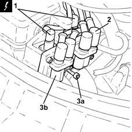
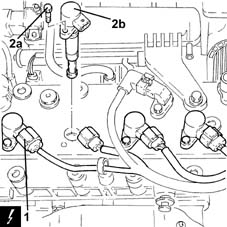

5510C14 ignition coil/s - r+r
- Path
- Procedures > 55 ELECTRICAL EQUIPMENT > 5510 ENGINE IGNITION > 5510C coil, ecu, sensors > 5510C14 ignition coil/s - r+r
- Kind
- repair procedure (removal / refitting; the operation number is the code)
- Applies to
- engines: 1.2 8v, 1.2 16v, 1.4 16v; all production periods
- Interactive page
- https://sloeber94.github.io/elrnDB-lYpsln/en/#/2429379
Applies to: engines: 1.2 8v; all production periods
 Removing
Removing
 Refitting
RefittingEnsure that the ignition key is in OFF position, then disconnect the battery negative terminal (-).
 | Name | Connector |
|---|---|---|
- | Battery |
Proceed with removal 1048A10 air cleaner filtering element - replace .
1. Disconnect the electrical connections from the ignition coils.
| Name | Connector |
|---|---|---|
1 | Ignition 'coil |
2. Disconnect the high tension leads from the ignition coil.
3. Undo the bolts (3a) and remove the ignition coils (3b).

Applies to: engines: 1.2 16v, 1.4 16v; all production periods
Removing
RefittingEnsure that the ignition key is in OFF position, then disconnect the battery negative terminal (-).
| Name | Connector |
|---|---|---|
- | Battery |
Proceed with removal 1048A10 air cleaner filtering element - replace .
1. Disconnect the electrical connections from the ignition coils.
| Name | Connector |
|---|---|---|
1 | Ignition 'coil |
2. Undo the bolts (2a) and remove the ignition coils (2b).

Applies to: engines: 1.2 8v; all production periods
Refitting
RemovingPlace the ignition coils back in their housings and tighten them using the bolts.
Connect the high tension leads to the ignition coils.
Connect the electrical connections to the ignition coils.
Proceed with refitting 1048A10 air cleaner filtering element - replace .
Connect the negative (-) battery terminal.
Applies to: engines: 1.2 16v, 1.4 16v; all production periods
Refitting
RemovingPlace the ignition coils back in their housings and tighten them using the bolts.
Connect the electrical connections to the ignition coils.
Proceed with refitting 1048A10 air cleaner filtering element - replace .
Connect the negative (-) battery terminal.